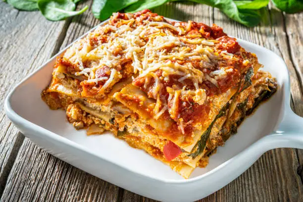

Lasagna

Description
Lasagna is the ultimate comfort food, layered with rich flavors and textures that come together in perfect harmony. This classic recipe features hearty layers of tender lasagna noodles, a savory meat sauce, creamy ricotta cheese, and gooey melted mozzarella. The meat sauce, simmered with onions, garlic, and aromatic herbs like oregano and basil, creates a robust base for the dish. Meanwhile, the ricotta mixture, enhanced with Parmesan and a hint of nutmeg, adds a creamy, velvety contrast. Each layer is a labor of love, building toward
a casserole that’s as beautiful as it is delicious.
Lasagna is the ultimate comfort food, layered with rich flavors and textures that come together in perfect harmony. This classic recipe features hearty layers of tender lasagna noodles, a savory meat sauce, creamy ricotta cheese, and gooey melted mozzarella. The meat sauce, simmered with onions, garlic, and aromatic herbs like oregano and basil, creates a robust base for the dish. Meanwhile, the ricotta mixture, enhanced with Parmesan and a hint of nutmeg, adds a creamy, velvety contrast. Each layer is a labor of love, building toward a casserole that’s as beautiful as it is delicious.
Once baked, the lasagna develops a golden, bubbly crust that signals it’s ready to be enjoyed. The process, while requiring some time and care, is straightforward and incredibly rewarding. Perfect for a family dinner, a potluck, or a special occasion, this lasagna brings people together with its comforting warmth and hearty flavors. Let it rest before serving to ensure those beautiful layers hold together, then dive into a dish that’s as
satisfying as a warm hug on a cold day.
Ingredients
- 1 lb (450g) ground beef (or a mix of beef and pork)
- 1 small onion, finely chopped
- 3 garlic cloves, minced
- 1 can (28 0z/800g) crushed tomatoes
- 2 tablespoon dried oregano
- 1 teaspoon dried basil
- 1 teaspoon sugar (optional, to balance acidity)
- Salt and pepper to taste
- 2 cups (450g) ricotta cheese
- 1 egg
- 1/2 cup grated Parmesan cheese
- 2 tablespoons chopped parsley (optional)
- Pinch of nutmeg (optional, for flavor)
- Salt and pepper to taste
- 2 tablespoons tomato paste
- 9–12 lasagna noodles (cooked according to package instructions)
- 3 cups shredded mozzarella cheese
- Extra grated Parmesan cheese for topping
Steps
- Prepare the Meat sauce:
- Heat a large skillet or saucepan over medium heat.
Add ground beef and cook until browned.
- Add onions and garlic, cooking until softened.
- Stir in crushed tomatoes, tomato paste, oregano, basil, sugar, salt, and pepper.
- Let simmer on low heat for 20–30 minutes, stirring occasionally.
- Prepare the Ricotta Mixture:
- In a bowl, mix ricotta, egg, Parmesan, parsley, nutmeg, salt, and pepper until well combined.
- Assemble the Lasagna:
- Preheat oven to 375°F (190°C)
- Spread a thin layer of meat sauce at the bottom of a 9x13-inch baking dish
- Layer 3–4 cooked lasagna noodles on top.
- Spread 1/3 of the ricotta mixture over the noodles, then sprinkle with mozzarella cheese.
- Add another layer of meat sauce. Repeat the layers (noodles, ricotta, mozzarella, meat sauce) until all ingredients are used, finishing with a layer of meat sauce topped with mozzarella and Parmesan cheese.
- Bake the Lasagna:
- Cover the dish with aluminum foil (lightly greased on the underside to prevent sticking).
- Bake for 25 minutes, then remove the foil and bake for an additional 20 minutes until bubbly and golden.
- Let the lasagna rest for 10 minutes before slicing.